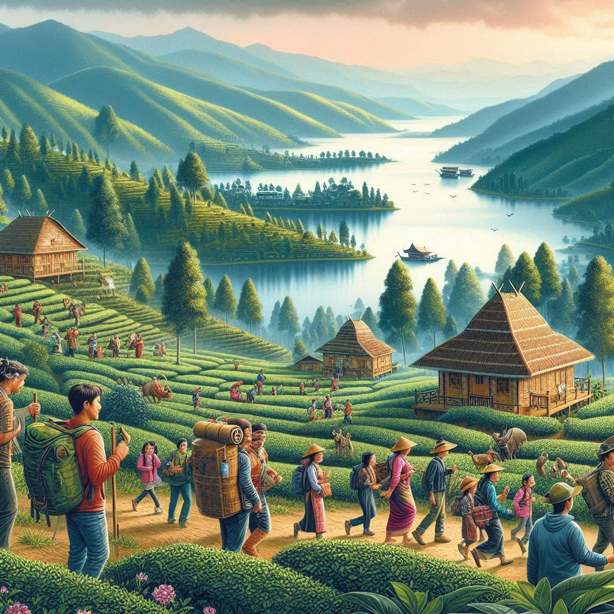
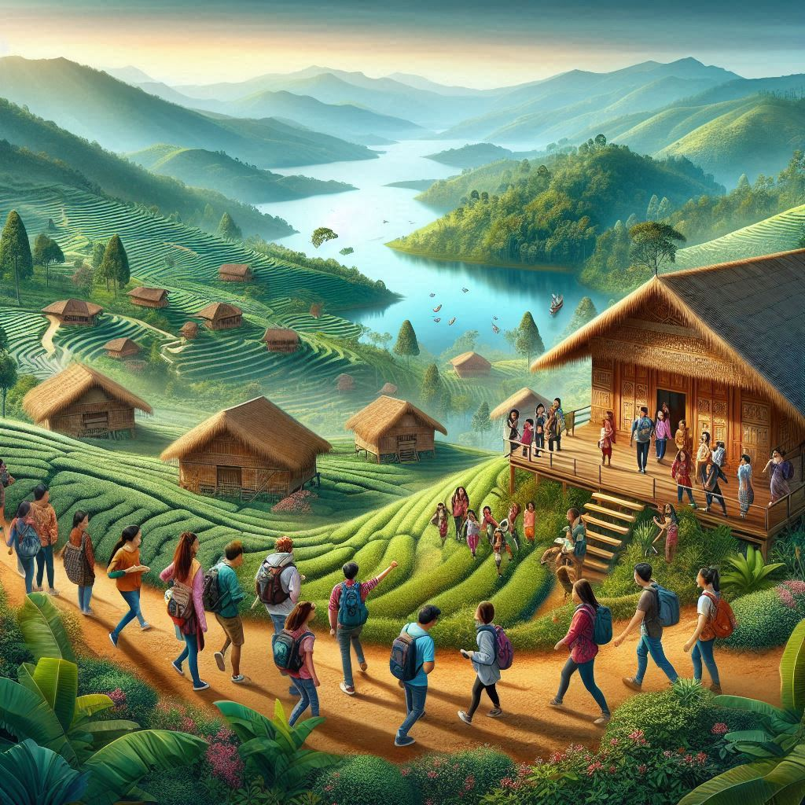

Mizoram is an emerging tourist destination, known for its scenic beauty, rich cultural
heritage, and peaceful atmosphere. The state is blessed with lush landscapes, hills, valleys,
rivers, and a vibrant tribal culture, making it an ideal location for nature lovers, adventure seekers, and
those looking to explore indigenous cultures. Here’s an overview of the tourism in Mizoram:
1. Natural Beauty and Attractions
a. Lushai Hills (Mizo Hills)
- The Lushai Hills, also known as the Mizo Hills, dominate the
landscape of Mizoram. These rolling hills, covered with dense forests and dotted with
waterfalls, are perfect for trekking and adventure tourism.
- Scenic Views: Locations such as Vantawng Falls (the tallest waterfall in
Mizoram), Mualnuam, and Reiek offer breathtaking views of the hills, valleys, and
distant mountains.
b. Vantawng Waterfall
- The Vantawng Waterfall, located near the town of Thenzawl, is the
tallest waterfall in Mizoram, with a height of about 230 meters (754 feet). The falls are
surrounded by lush greenery and make for an excellent spot for photography and nature walks.
c. Lengteng Wildlife Sanctuary
- Located in the Lengteng Range, this sanctuary is home to a variety of wildlife,
including the tiger, elephant, binturong, and various species of birds. The
sanctuary’s dense forests, streams, and wildlife make it an excellent place for eco-tourism and
wildlife enthusiasts.
d. Khawnglung Wildlife Sanctuary
- Situated in the Khawnglung Range in eastern Mizoram, this sanctuary is famous
for its diverse flora and fauna. It is an important site for bird watching and is home to
various species, including the Bengal tiger and leopard.
e. Tamdil Lake
- Tamdil Lake, located about 85 km from Aizawl, is a picturesque, man-made
reservoir surrounded by forested hills. It is a popular destination for boating, picnics, and
nature walks, offering a peaceful escape in a tranquil setting.
f. Tualcheng Village
- Tualcheng, located near Aizawl, is a serene, scenic village that offers
panoramic views of the surrounding hills. The place is known for its picturesque landscapes,
making it a perfect spot for tourists seeking peace and natural beauty.
g. Reiek Mountain
- Reiek Mountain is a popular trekking destination located around 20 km from
Aizawl. It offers panoramic views of the surrounding valleys and plains and is also known
for its Mizo cultural center at the summit, which highlights traditional Mizo life and
heritage.
h. Blue Mountain (Phawngpui)
- The Blue Mountain or Phawngpui, located in the Phawngpui
National Park, is the highest peak in Mizoram (2,210 meters or 7,250 feet). It
offers spectacular views, making it a popular destination for trekkers and adventure
enthusiasts. The region is also home to a variety of flora and fauna, including
rhododendron and orchids.
2. Cultural and Historical Sites
a. Aizawl
- Aizawl, the capital of Mizoram, is a vibrant city and a key tourist
destination. The city is perched on a hill and offers stunning views of the surrounding hills
and valleys. Notable attractions include:
- The Solomon’s Temple: A modern Christian church with beautiful architecture and peaceful
surroundings.
- Mizo Heritage Museum: This museum offers insights into the culture, traditions, and
history of the Mizo people, displaying traditional attire, tools, and artifacts.
- Lalchungnunga Park: A park located near the city offering a great view of the surrounding
valleys.
b. Hmuifang
- Hmuifang is a beautiful hill station located about 50 km south of Aizawl. It
offers panoramic views, cool weather, and a cultural center that showcases traditional Mizo
handicrafts. It's also famous for the Hmuifang festival, a celebration of Mizo culture.
c. Mizoram State Museum
- The Mizoram State Museum in Aizawl is another important cultural destination,
where visitors can explore the rich heritage of Mizoram’s tribes, including displays on their
traditional lifestyles, crafts, and musical instruments.
d. Champhai
- Champhai is a picturesque town located near the Myanmar border and is famous
for its beautiful valleys and orchards. It is often referred to as the "fruit
bowl" of Mizoram due to its extensive cultivation of fruits like grapes and
apples. Visitors can enjoy the views of the Myanmar hills and explore nearby
attractions like Falkawn Village and Rih Dil Lake.
3. Adventure Tourism
a. Trekking and Hiking
- Mizoram’s hilly terrain makes it ideal for trekking and hiking enthusiasts. Trails in places
like Reiek, Blue Mountain (Phawngpui), and Lengteng are popular with
trekkers. Adventure tourism has been growing, with many tourists enjoying scenic walks and the
opportunity to explore untouched nature.
b. Camping
- Several locations in Mizoram, such as Vantawng Falls and Reiek, offer camping
opportunities amidst the serene landscape. The state's cool weather and lush surroundings make
it an ideal place for outdoor activities like camping, bonfires, and stargazing.
c. Wildlife Safari
- Lengteng Wildlife Sanctuary and Khawnglung Sanctuary offer wildlife safaris, where
visitors can spot a variety of species such as binturongs, leopards,
elephants, and various species of birds. These parks offer the chance to witness the
state's diverse flora and fauna in their natural habitats.


4. Festivals and Cultural Tourism
Mizoram's cultural festivals are an integral part of its tourism, offering visitors a unique glimpse
into the state's traditions, customs, and way of life. Some important festivals include:
a. Chapchar Kut
- Chapchar Kut is the largest and most popular festival in Mizoram, celebrated in
March. It marks the end of the jhum (slash-and-burn) farming season. The festival
involves traditional dances, music, and feasts, offering tourists the chance to experience Mizo
culture in full bloom.
b. Mim Kut
- Mim Kut is a harvest festival celebrated in August and September
to honor the ancestors. It’s marked by traditional dances, offerings of food, and a deep sense
of community.
c. Thalfavang Kut
- Thalfavang Kut is another important harvest festival celebrated in
November, marking the end of the harvest season. The festival includes dances, feasts,
and an expression of gratitude for the harvest.
5. Adventure Sports and Activities
- Boating: The serene lakes in Mizoram, such as Tamdil Lake and Rih Dil
Lake in Champhai, offer boating experiences for tourists.
- Fishing: The numerous rivers and lakes in Mizoram also provide opportunities
for fishing, a popular local pastime.
6. Shopping and Souvenirs
Mizoram offers several unique handicrafts and textiles that tourists can buy as souvenirs:
- Mizo Shawls: Handwoven shawls made of cotton or wool are popular.
- Bamboo Crafts: Items made from bamboo, such as baskets, mats, and hats, are widely
available.
- Traditional Jewelry: Silver jewelry, often crafted by local artisans, is another
popular item for tourists to take home.
Conclusion
Mizoram is a hidden gem for tourists seeking a combination of natural beauty, adventure, and cultural
richness. Whether it's trekking through its lush hills, visiting cultural centers, or participating in its
vibrant festivals, there’s much to explore. With its welcoming people and tranquil environment, Mizoram is
an ideal destination for nature lovers, adventure enthusiasts, and those interested in experiencing the
traditional lifestyles of India’s northeastern tribes.